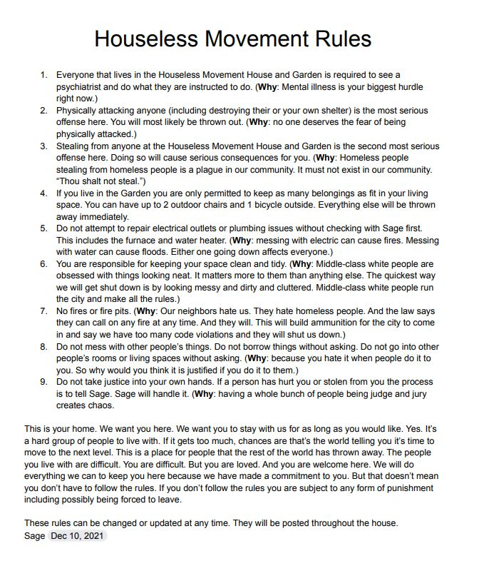

Timeline photos
I have many thoughts on homeless people and rules. The general belief is that homeless people don't want to go into shelters because they don't want rules. What they don't want are stupid rules like: you can't wear shorts, you can't have your purse or phone in your bed, lights out at 8:30. Yes, there are drug use rules. But those are the easiest to ignore. I could show you 10 people and ask you which of them are on meth. I guarantee you wouldn't be able to do it. I can't do it and I'm constantly around people on meth.
The fact is, homeless people (like ALL people) want rules. They want to feel safe. They want their belongings to be safe. They want to live peacefully. These are universal desires.
I've been sheltering people (again) since about April of this year. I have very intentionally avoided writing down rules because I wanted to make sure I understood what the issues of this particular group of people are.
But we are now at a point where we are in need of some foundational rules at the @[112716880296603:274:Houseless Movement] House and Garden. I wanted to share them with you so that you can see that homeless people actually DO want rules and will abide by them if they make sense. I chose to put a "why" next to each rule so that they could understand why the rule exists. So many rules in society are pointless. And homeless people pick up on that really easily.
@[486849101501262:274:Akron Fire Department]
@[100064622113875:2048:Akron Police Department]
@[100064805494040:2048:City of Akron, Ohio - Mayor's Office]
@[100791901503017:274:Summit County Continuum of Care]
@[1325652298:2048:Dennis Shumaker]
You might want to know that these are our rules as well. If you get a call about any of these things and you don't want to deal with it you can call or text me (I'm a better texter if I don't know whose calling), or message me here on Facebook. I'll take care of it. Here's my cell number: 330-416-7519
This is in relation to the houseless people living at 85 Kent Place in Akron Ohio.